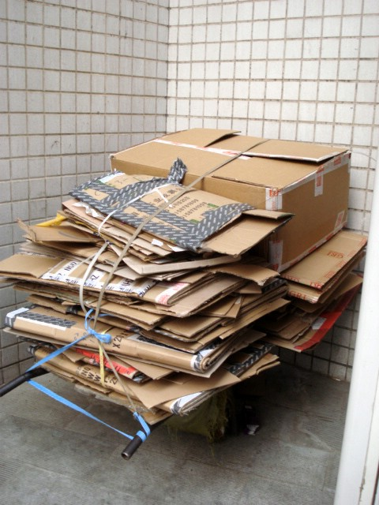
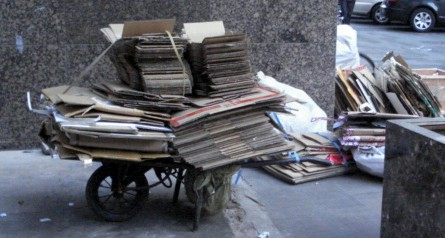

| Recycling | GO TO PAGE 2 OF 2 | BACK TO DATE PAGE | ||||||||||||||
| I see people stationed with carts on the sidewalks throughout Qingdao whose livelihood is recycling. I'm not sure how their carts are filled everyday, but I've seen some going through trash in search of recyclable items. | ||||||||||||||||
|  | ||||||||||||||||
|  | ||||||||||||||||
| GO TO PAGE 2 OF 2 | BACK TO DATE PAGE | |||||||||||||||